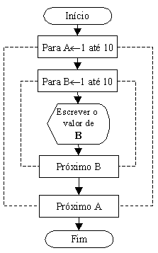

Exemplos Práticos de Construções de Lógicas e Fluxogramas
Encadeamento de "Loops"
O encadeamento de laços, ou laços aninhados, consiste no agrupamento de dois ou mais laços, uma estrutura que também aparece constantemente na construção de programas.
Vejamos o exemplo 7:
Fazer um programa que conte de 1 até 10, dez vezes, e escreva estas seqüências no vídeo.

Detalhes:
- Para cada valor de A a variável B recebe valores de 1 a 10;
- Veja que o símbolo de exibição está dentro do laço de B, logo ele será executado para os valores de B de 1 a 10; por sua vez, o laço de B, está dentro do laço de A, logo o laço de B será executado 10 vezes; consequentemente os valores de B(1 a 10) serão mostrados 10 vezes.
CUIDADO!
Observe que os laços A e B não podem se cruzar, ou seja, o primeiro "Próximo" se refere ao último "Para", o segundo "Próximo" se refere ao primeiro "Para".
Se a estrutura lógica exigir mais aninhamentos de laços que este exemplo, os laços devem seguir a observação acima.

| Página Anterior | Próxima Página |